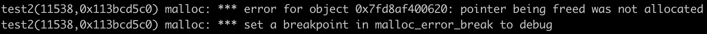

C++ 编码准则之 “The Rule of Three”
不同于 C 语言，在 C++ 中，我们通常会使用“类”结构，来定义和管理资源。类，可以让我们将程序逻辑和数据按照不同的角色，进行封装，进而提高代码的重用性、灵活性和扩展性。但随之而来的类对象的“隐式”拷贝，却也在不经意间充斥在整个应用程序运行的各个生命周期中。好的类结构定义，可以让应用程序通过“资源移动”等方式，使数据资源的流动和使用变得更高效。相反，不当的类结构定义反而会使应用程序，在运行过程中发生未知的资源使用问题，比如常见的内存泄漏、内存溢出、悬挂指针，以及非法的内存释放，等等。那么，为了尽可能避免出现这些问题，”The Rule of Three“ 这一套编码准则，在经过不断地实践后，便被人们总结出来了。
接下来，让我们先从 C++ 中最基础的拷贝构造函数开始，来一步步了解 “The Rule of Three” 这套编码准则所要解决的一些问题。
#include <string>
using namespace std;
class Person {
string name;
int age;
public:
// 构造函数；
Person(const string &name, int age) : name(name), age(age) {}
};
int main(int argc, char **argv) {
Person P1("Jason Yu", 26); // 构造生成；
return 0;
}如上述代码所示，这里我们定义了一个类 “Person”，这个类有两个私有成员，分别表示一个人的名字（name）和年龄（age）。在主函数中，我们通过这个类的构造函数，创建了一个名为 “P1” 的 “Person” 类对象。接下来，让我们继续修改代码。
#include <string>
using namespace std;
class Person {
string name;
int age;
public:
Person(const string &name, int age) : name(name), age(age) {}
// 拷贝构造和拷贝赋值函数；
Person(const Person &p) : name(p.name), age(p.age) {}
Person& operator=(const Person &p) {
name = p.name;
age = p.age;
return *this;
}
};
int main(int argc, char **argv) {
Person P1("Jason Yu", 26); // 构造生成；
Person P2(P1); // 拷贝构造生成；
Person P3 = P2; // 拷贝构造生成；
P1 = P3; // 拷贝赋值生成；
}在这段新代码中，我们为 “Person” 类加上了拷贝构造和拷贝赋值函数。可以看到，在主函数代码的第二行，类对象 “P2” 是通过之前的类对象 “P1” 构造生成的，而这里的构造过程，就是通过调用 “Person” 类的拷贝构造函数来完成的。类似地，主函数第三行代码中的类对象 “P3”，是通过以对象 “P2” 进行赋值的方式生成的，而这里便调用了 “Person” 类的拷贝赋值函数。
通常来说，在大多数情况下，我们并不需要“显式”地定义类结构的拷贝构造函数与拷贝赋值函数，但前提是：只要我们能够确保没有在类的构造函数中进行堆内存的上资源分配。接下来，让我们继续对刚才讲到的代码进行一些修改，如下所示。
#include <memory>
#include <cstring>
using namespace std;
class Person {
char* name;
int age;
public:
Person(const char *inputName, int age) : age(age) {
const auto nameLen = strlen(inputName) + 1;
name = reinterpret_cast<char*>(malloc(nameLen));
memcpy(name, inputName, nameLen);
}
~Person() {
free(name);
}
};
int main(int argc, char **argv) {
Person P1("Jason Yu", 26);
return 0;
}这里，我们首先将类 “Person” 中原先为 std::string 类型的 “name” 成员其类型修改为字符指针，这个指针将指向堆内存中一个字符数组的首地址。而为了构造这个在堆内存中的字符数组，我们就需要修改这个类原来的构造函数逻辑。可以看到，这里我们使用 malloc 方法分配了一块用于存放字符的堆内存区域，然后再使用 memcpy 方法将原来位于栈内存上的字符内容，直接拷贝到了我们刚刚分配的这块内存区域中。
到这里，我们就可以通过这个新的构造函数来生成对象了，但这样就结束了吗？
需要注意的是，在刚刚的构造函数中，我们在堆内存上分配了相应的内存资源，而这些资源就需要在类解构时被相应地释放。因此，这里我们还需要为类编写该类所对应的析构函数，并在函数中通过调用 free 方法，来释放之前分配的内存资源。那么同样地，在类对象进行拷贝构造和拷贝赋值时，我们也需要进行类似的内存申请以及资源拷贝过程，而不能直接依赖编译器默认生成的拷贝构造和拷贝赋值函数的行为。这里我们以如下这段代码为例：
#include <memory>
#include <cstring>
using namespace std;
class Person {
char* name;
int age;
public:
Person(const char *inputName, int age) : age(age) {
const auto nameLen = strlen(inputName) + 1;
name = reinterpret_cast<char*>(malloc(nameLen));
memcpy(name, inputName, nameLen);
}
Person(const Person&) = default;
~Person() {
free(name);
}
};
int main(int argc, char **argv) {
Person P1("Jason Yu", 26);
// error!
Person P2(P1);
return 0;
}在这段代码中，我们为 “Person” 类添加了一个默认的拷贝构造函数，并在主函数中通过拷贝构造的方式，生成了名为 “P2” 的对象，代码的其他部分与之前一致。而当我们运行这段代码时，得到的结果是这样的，如下图所示：

那么，为什么会这样呢？其实这是由于编译器默认生成的拷贝构造函数，仅会按顺序依次拷贝目标对象各成员的值，而在这里经过拷贝后，“P1” 与 “P2” 两个对象的 “name” 成员，将指向同一块堆内存区域。当 “P1” 对象完成析构后，这段内存区域就已经被释放了。因此，当 “P2” 对象再次执行其析构函数进行内存释放时，就会出现重复释放同一内存区域这一问题，所以就出现了这样的错误。
至此，让我们回过头来看下 “The Rule of Three” 这个编码准则的具体内容。其实很简单，它规定我们：“如果你需要自己显式地声明一个类的析构函数，那么你可能也需要同时显式地声明它的拷贝构造函数以及拷贝赋值函数。”由于这三种函数在大多数情况下，需要同时被定义，或者同时不被定义，因此我们称这条准则为 “The Rule of Three”。
“The Rule of Three” 这条编码准则，出现于 C++11 之前的时代，而 C++11 的出现，使得 “The Rule of Three” 被拓展成了 “The Rule of Five”。这里多出的 “2”，就分别对应于类的移动构造函数和移动赋值函数。关于这两个函数的相关细节，你可以参考 “cplusplus.com” 等网站进行了解，但它们的本质还是围绕着类本身的资源管理和使用。
C++ 由于其复杂性和灵活性，导致我们在日常开发的过程中，一不留神就会编写出带有潜在风险的代码。因此，在编码过程中遵循一定的原则便显得格外重要。除此之外，也可以通过多实践、多踩坑的方式来了解常见问题可能出现的原因，学会“抓住线索、基于经验、按照顺序”的排查问题方法，是在 C++ 开发中必不可少的一项技能。